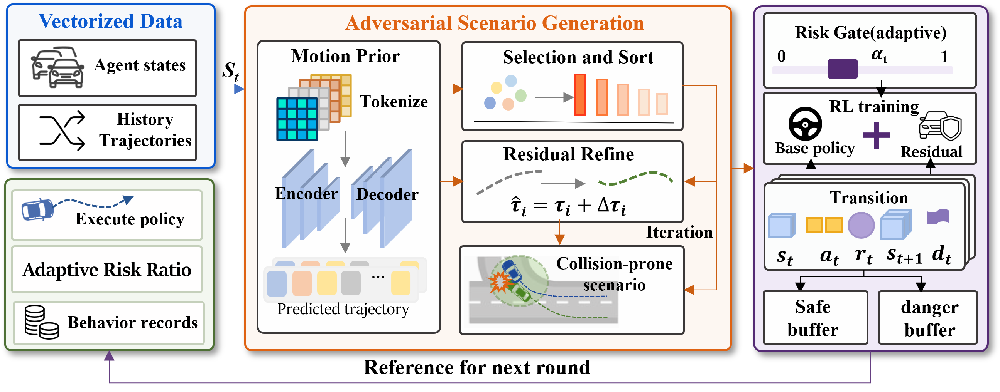
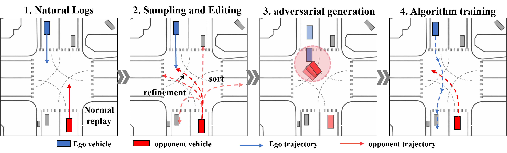
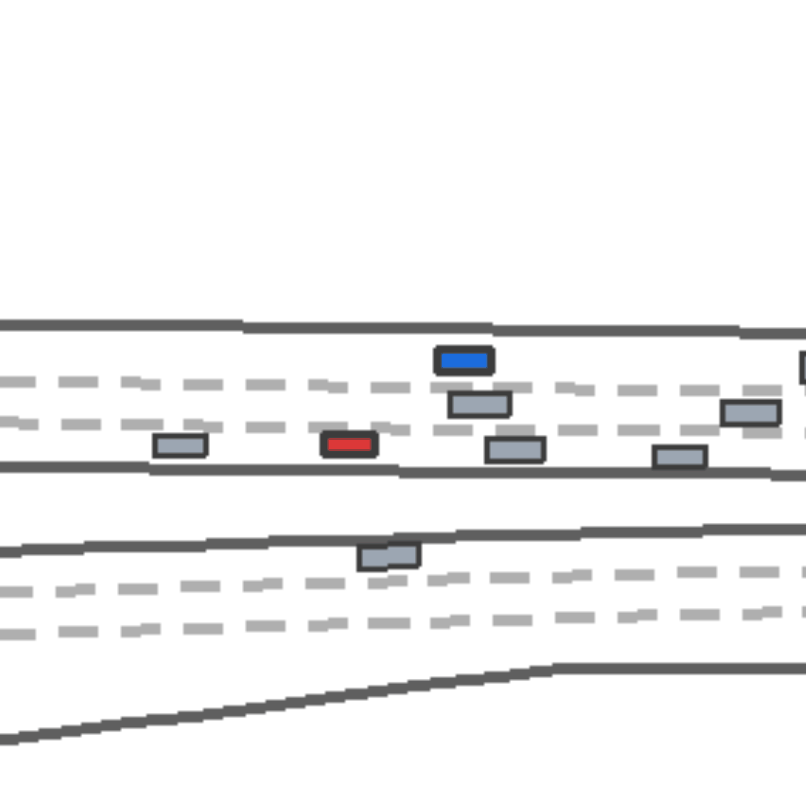
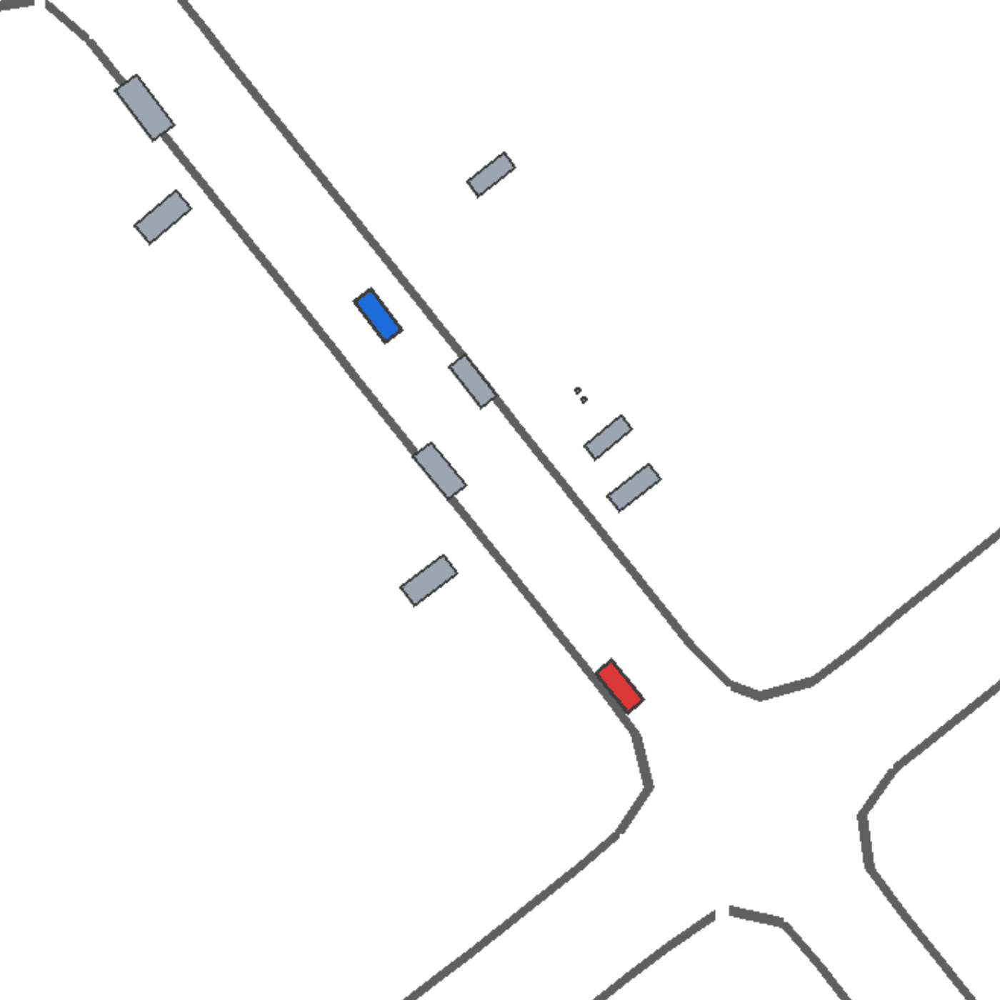
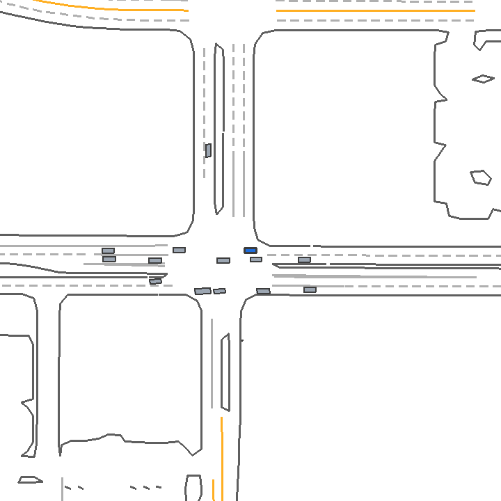
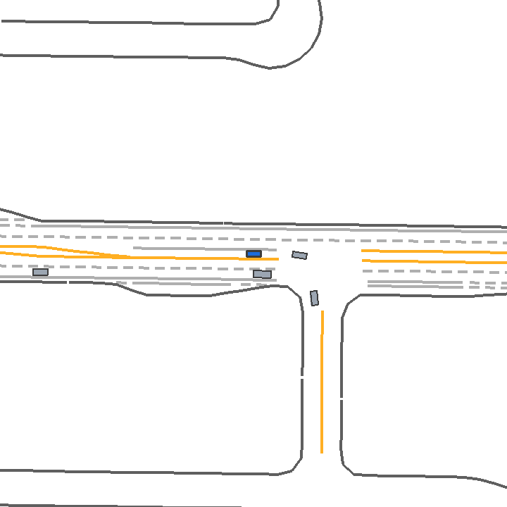

Research Project Page
DASH: Dynamic Adversarial Scenario Generation with High-Risk Resampling from Policy Feedback for Closed-Loop Driving Training
Overview
Framework motivation and overall workflow.
Abstract
Autonomous-driving policies must remain reliable in nominal traffic while recovering from rare close interactions, yet such long-tail failures are sparsely represented in natural driving logs. Existing adversarial scenario-generation methods often maximize static criticality, producing stress cases that may be detached from the current policy or insufficiently constrained for useful training.
We present DASH, a dynamic framework with high-risk resampling from policy feedback for closed-loop driving training. DASH searches a multimodal motion-prior candidate bank, ranks future trajectories by learned interaction risk, and applies bounded residual edits to create interpretable stress cases. On the policy side, a base actor preserves nominal driving, while an online risk gate activates residual corrective control only as local interaction risk rises.
Under the reported simulator protocol, learned ranking provides the main source of risk exposure, bounded refinement adds stress under measurable displacement diagnostics, and the risk-gated policy improves success, route completion, and road keeping across nominal, adversarial, and mixed suites. These results support policy-aligned stress generation rather than collision pursuit alone, together with risk-conditioned control that preserves nominal capability during high-risk training.


Results
Generator component analysis and full policy evaluation.
Generator Configuration Analysis
Rates are percentages. Values are mean ± standard deviation.
| Variant | Coll. ↑ | Early ↑ | TTC<2.5 s ↑ | Min dist. ↓ | ADE-ref. ↓ | Off-lane ↓ |
|---|---|---|---|---|---|---|
| DASH | 83.38±0.60 | 66.05±1.20 | 39.50±0.50 | 4.66±0.04 | 17.03±0.14 | 12.21±0.74 |
| Refine Only | 30.20±1.33 | 27.56±1.86 | 21.99±0.30 | 8.50±0.06 | 5.76±0.10 | 5.90±0.07 |
| Rank Only | 75.71±0.88 | 51.06±0.40 | 29.76±0.18 | 4.99±0.09 | 16.39±0.29 | 12.42±0.20 |
| Random Selection | 18.96±1.45 | 15.43±1.30 | 14.46±0.59 | 9.78±0.29 | 16.93±0.78 | 16.79±0.43 |
| 16 Candidates | 73.24±1.27 | 59.17±1.81 | 35.92±0.70 | 5.25±0.04 | 13.76±0.10 | 8.72±0.77 |
| Single Mode | 8.51±0.28 | 6.31±0.15 | 11.52±0.10 | 10.05±0.03 | 4.82±0.11 | 4.68±0.09 |
Table 10. Generator configuration analysis over DASH and five reduced configurations.
Full Policy Evaluation
Mean ± between-group standard deviation over five disjoint evaluation groups.
| Suite | Training Curriculum | Succ. ↑ | Crash ↓ | Out ↓ | RC ↑ |
|---|---|---|---|---|---|
| Nominal Suite | |||||
| Nominal | Nominal TD3 | 50.6±5.32 | 18.4±2.88 | 29.4±5.18 | 69.06±4.09 |
| Nominal | 50% Adv. TD3 | 52.8±4.15 | 16.6±2.61 | 31.4±4.56 | 74.35±0.84 |
| Nominal | Risk-Cond. TD3 | 63.0±3.16 | 16.8±0.84 | 21.6±2.79 | 80.44±1.60 |
| Adversarial Suite | |||||
| Adversarial | Nominal TD3 | 23.4±2.61 | 48.4±4.93 | 27.0±6.20 | 53.52±3.00 |
| Adversarial | 50% Adv. TD3 | 30.8±2.77 | 43.8±3.96 | 26.0±1.87 | 61.23±3.09 |
| Adversarial | Risk-Cond. TD3 | 36.2±4.27 | 45.0±3.81 | 20.0±4.00 | 64.83±1.87 |
| Mixed-20 Suite | |||||
| Mixed-20 | Nominal TD3 | 43.6±2.88 | 24.6±1.52 | 30.2±3.27 | 65.83±2.25 |
| Mixed-20 | 50% Adv. TD3 | 46.8±5.40 | 23.8±3.11 | 30.2±5.97 | 70.96±2.34 |
| Mixed-20 | Risk-Cond. TD3 | 57.6±2.07 | 23.8±1.92 | 19.8±0.84 | 77.11±1.47 |
| Mixed-50 Suite | |||||
| Mixed-50 | Nominal TD3 | 38.0±4.24 | 33.6±3.58 | 28.0±3.94 | 61.61±2.27 |
| Mixed-50 | 50% Adv. TD3 | 42.2±7.50 | 29.0±4.53 | 29.0±6.52 | 67.28±2.59 |
| Mixed-50 | Risk-Cond. TD3 | 50.0±4.47 | 31.6±3.05 | 19.6±1.95 | 72.90±2.18 |
Table 14. Full policy evaluation including Mixed-20. Succ., Crash, Out, and RC denote success, crash, off-road, and route-completion rates.
Qualitative Demos
Representative scenario-generation and policy-control cases.
Scenario Generation
Logged interactions and their corresponding DASH-generated high-risk variants.


Policy Rollouts
Nominal-only TD3 and risk-gated residual TD3 under matched scenario conditions.



Citation
Please use the following citation when referring to this work.
Chen, Dehui, et al. “DASH: Dynamic Adversarial Scenario Generation with High-Risk Resampling from Policy Feedback for Closed-Loop Driving Training.” arXiv preprint, 2026.
@article{chen2026dash,
title = {DASH: Dynamic Adversarial Scenario Generation with High-Risk Resampling from Policy Feedback for Closed-Loop Driving Training},
author = {Chen, Dehui and Liu, Yongzhi and Yan, Xintao and Cao, Zhong and Hu, Weilong and Zhou, Dian and Wang, Hansen and Qiu, Yushu and Dong, Zhaozhi and Liu, Lijun and Liang, Taonian and Yin, Guodong and Zhuang, Weichao},
journal = {arXiv preprint},
year = {2026}
}The BibTeX entry will be updated with the final arXiv identifier after the public arXiv record is available.
Acknowledgments
This work was supported in part by the National Natural Science Foundation of China (NSFC) under Grant 52441204, in part by the Major Science and Technology Special Project of Jiangsu Province under Grant BG2025018, and in part by the Excellent Youth Fund Project of the Jiangsu Basic Research Program under Grant BK20250172.